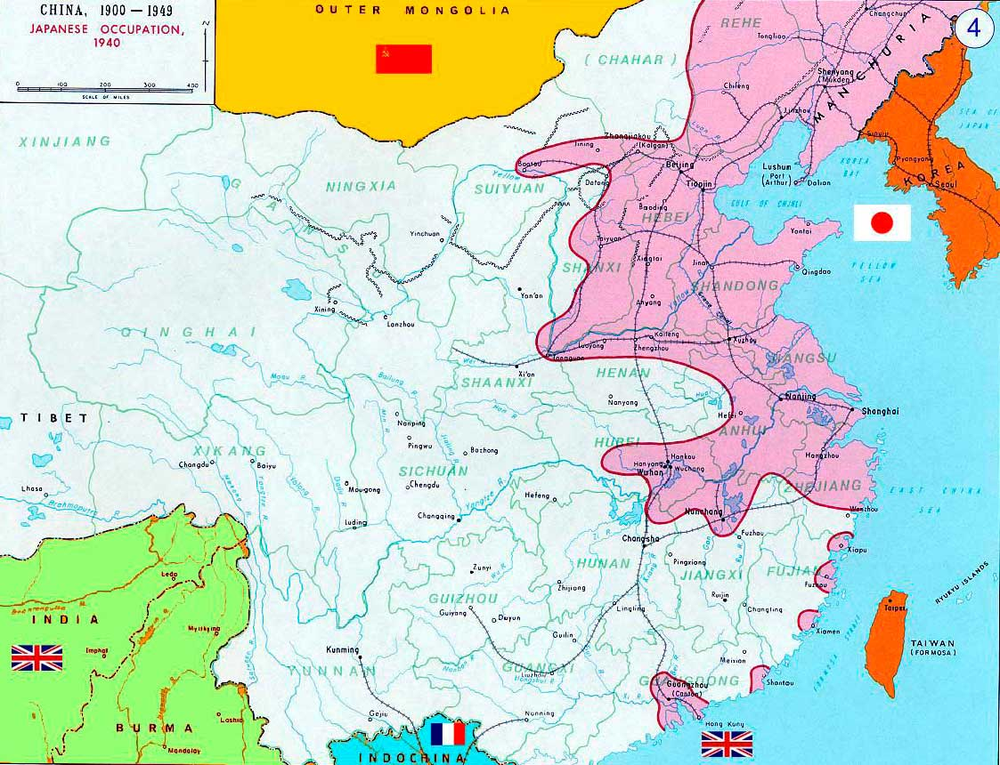
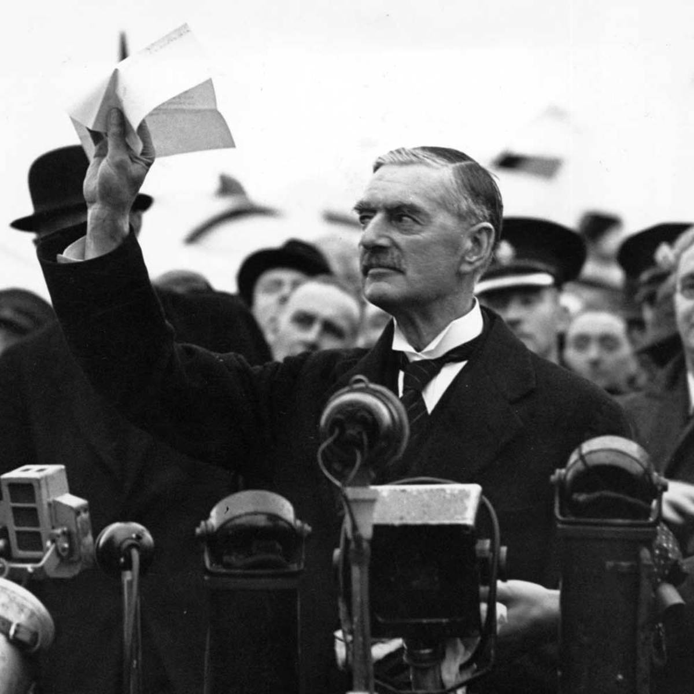
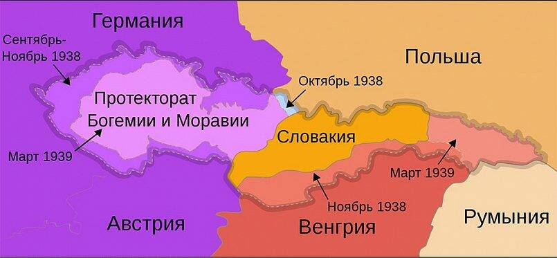
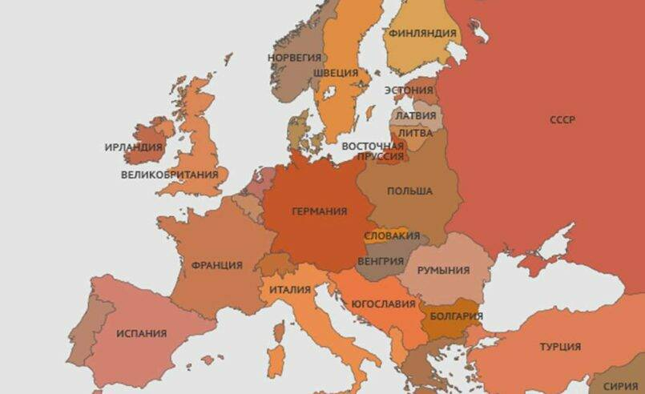

Вторая мировая война (1 сентября 1939 — 2 сентября 1945) — самая масштабная война в истории
человечества, в которой приняли участие 62 государства и свыше 80% населения Земли.
Непосредственно боевые действия затронули 40 государств и велись на территории Европы, Азии,
Африки, а также на просторах всех океанов.
Причины и суть конфликта
Главными виновниками в развязывании новой войны стали Германия, Италия и Япония. Все эти страны опоздали к разделу
так называемого «колониального пирога»и стремились перекроить политическую карту мира в свою пользу. Несмотря на то,
что Япония и Италия вышли из Первой мировой войны победителями, требуемых результатов они так и не получили — основные
колонии и рынки сбыта так и остались в руках основных колониальных держав: Великобритании, Франции и США. Германия же,
как проигравшая сторона, вынуждена была принять тяжелые условия Версальского мирного договора. Все это подготовило почву
для новой мировой войны. Были и другие причины для конфликта. Так, в 1931 году Япония оккупировала Северный Китай и
Манчжурию, а в 1937 году началась японо-китайская война, продлившаяся вплоть до капитуляции Японии в 1945 году.
Экономическая и военная экспансия Японии в Китае встретила активное
сопротивление со стороны ее главных конкурентов в регионе:
Великобритании и США, которые ввели ротив нее экономические
санкции.
В 1938 году на озере Хасан, а в 1939 году на реке Халхин-Гол произошла серия пограничных вооруженных
столкновений между СССР и Японией.

Японская оккупация Китая
Пришедшие в 1922 году к власти в Италии фашисты во главе с Бенито Муссолини
с 1930-х годов начали проводить все более агрессивную внешнюю политику.
В 1935 году они объявили войну фиопии и в 1936 году захватили ее территорию.
Тогда же был опубликован проект «Большой Италии», по которому
Средиземное море объявлялось сферой интересов Италии.
Огромные контрибуции и экономические санкции со стороны стран-победительниц,
а также тяжелейший экономический кризис, разразившийся в 1929 году,
сильно ударили по немецкой экономике. Бедность,безработица и
социальное неравенство привели к тому, что в Германии стали набирать
популярность радикальные националистические партии.
В 1933 году в Германии к власти пришла Национал-социалистическая немецкая рабочая партия (НСДАП) во главе
с Адольфом Гитлером. Одними из главных лозунгов нацистской партии были отмена условий Версальского
мирного договора, реваншизм и расширение жизненного пространства для германской нации.
В 1933 году Германия вышла из состава участников Лиги Наций. В 1935 году в Германии вели всеобщую воинскую
повинность и начали быстрое наращивание военной мощи. С 1934 года по 1940 год объем военного
производства вырос в 22 раза.
В своем стремлении умиротворить агрессора и направить его аппетиты на восток Великобритания и
Франция шли на все новые уступки Германии.
Видя, что его действия не встречают активного противодействия, Гитлер выдвинул Чехословакии ультиматум о передаче
Германии Судетской области, населенной преимущественно немцами. 30 сентября 1938 года между Великобританией,
Францией, Германией и Италией было подписано Мюнхенское соглашение (в советской историографии известное как
«мюнхенский сговор»), по которому Судеты передавались Германии. Чехословацкая делегация при этом не присутствовала
и была поставлена перед фактом. Cтала известной фраза, которую произнес премьер-министр Великобритании Невилл Чемберлен
по возвращении в Лондон: «Я привез мир нашему поколению».На это Уинстон Черчилль отреагировал словами: «Великобритании
был предложен выбор между войной и бесчестием. Она выбрала бесчестие и получит войну».

Чемберлен после прибытия из Мюнхена
В нарушение Мюнхенского соглашения в марте 1939 года Германия оккупировала оставшуюся часть Чехии,
создав на ее территории протекторат Богемии и Моравии, а Словакия была объявлена формально независимым
пронацистским государством.

Раздел Чехословакии по Мюнхенскому соглашению
Весной 1939 года СССР предложил Великобритании и Франции заключить трехстороннее соглашение о взаимопомощи
в случае немецкой агрессии, но получил отказ. Видя нежелание западных стран заключать союз, Москва подписала
23 августа 1939 года договор о ненападении с Берлином, получивший известность как пакт Молотова —
Риббентропа и включавший в себя секретный протокол о разграничении сфер влияния в Восточной Европе.
Страны — участницы Второй мировой войны
Участников войны можно разделить на два противоборствующих лагеря: страны «оси» с союзниками и страны антигитлеровской
коалиции. В течение войны количество стран-участниц изменялось в зависимости от успехов той или иной стороны.
К странам «оси» относились в первую очередь Германия, Италия и Япония, которые подписали 27 сентября 1940 года Тройственный
пакт о взаимопомощи и распределении зон влияния. Также их союзникам были Венгрия, Румыния, Болгария, Финляндия и
коллаборационистские правительства завоеванных Германией, Италией и Японией стран.
Основными участниками антигитлеровской коалиции изначально были первыми вступившие в войну с Германией Великобритания
(с доминионами), Франция и Польша, а с 1941 года — СССР, США и Китай.

Европа накануне войны
Основные этапы событий Второй Мировой
Первый этап 2 мировой войны (сентябрь 1939 - июнь 1941)
Утром 1 сентября 1939 года немецкий броненосец «Шлезвиг-Гольштейн» атаковал польские укрепления на Вестерплатте под
Гданьском, начав таким образом Вторую мировую войну.
3 сентября Великобритания и Франция объявили Германии войну.
Имея многократное преимущество в численности войск, бронетехнике и авиации, вермахт, несмотря на ожесточенное сопротивление
польских войск, к 10 сентября разбил основные вооруженные силы Польши.
17 сентября части Рабоче-крестьянской Красной армии (РККА) вошли на территорию Восточной Польши, чтобы
«защитить братские народы» - территории Западной Беларуси и Западной Украины вошли в состав СССР по секретному протоколу
к пакту Молотова — Риббентропа. В тот же день польское правительство бежало из страны.
Основные даты Великой Отечественной Войны
1941 год
22 июня – Вероломное нападение фашистской Германии на СССР.
22 июня – конец июля – Героическая оборона Брестской крепости.
23 июня – Создание Ставки Верховного Главнокомандования.
30 июня – Создание Государственного Комитета Обороны.
3 июля – Выступление по радио И.В. Сталина с обращением к советскому народу.
10 июля – 10 октября – Смоленское сражение.
10 июля - 13 января 1944 года – Героическая оборона Ленинграда.
5 августа – 18 августа – Героическая оборона Одессы.
30 октября – 4 июля 1942 года – Героическая оборона Севастополя.
5 декабря – Начало контрнаступления Красной Армии под Москвой.
22 июня – Вероломное нападение фашистской Германии на СССР.
22 июня – Вероломное нападение фашистской Германии на СССР.
1942 год
30 мая – Создание Центрального Штаба партизанского движения.
17 июля – 2 февраля 1943 года – Битва под Сталинградом.
19 ноября – начало контрнаступления Красной Армии под Сталинградом.
23 ноября – Окружение 330 тысячной группировки немецко-фашистских войск под Сталинградом.
1943 год
5 июля – 23 августа – Битва под Курском.
12 июля – Встречное танковое сражение под Прохоровкой.
3 августа – 4 ноября – «Рельсовая война» советских партизан.
6 ноября – Освобождение столицы Украины Киева.
28 ноября – 1 декабря – Тегеранская конференция руководителей антифашистской коалиции.
10 июля – 10 октября – Смоленское сражение.
1944 год
27 января – Освобождение Ленинграда от вражеской блокады.
9 мая - освобождение Севастополя.
13 октября – Освобождение столицы Латвии Риги.
16 декабря 1944 г. = 28 января 1945 г. – наступление немецко-фашистских войск в Арденнах.
1945 год
17 января – Освобождение столицы Польши Варшавы.
9 мая – День ПОБЕДЫ.
24 июня – Парад ПОБЕДЫ в Москве.
20 ноября 1945 года – 1 октября 1946 года – Нюрнбергский процесс над главными военными преступниками Германии.